or set the correct java command to the javafx-maven-plugin:
<configuration><executable>/path/to/jdk-11/bin/java</executable></configuration>.
or set the correct java command to the javafx-maven-plugin:
<configuration><executable>/path/to/jdk-11/bin/java</executable></configuration>.
This section explains how to create a JavaFX application in IntelliJ IDEA. JavaFX 15.0.1 and IntelliJ IDEA 2020.1 were used for the IDE screenshots.
Download an appropriate JDK for your operating system and set JAVA_HOME to the JDK directory. Refer to Install Java section for more information.
You can create a JavaFX modular or non-modular project and use the IDE tools, Maven or Gradle build tools.
Follow these steps to create a JavaFX non-modular project and use the IDE tools to build it and run it. Alternatively, you can download a similar project from here.
Download the appropriate JavaFX SDK for your operating system and unzip it to a desired location, for instance /Users/your-user/Downloads/javafx-sdk-11.
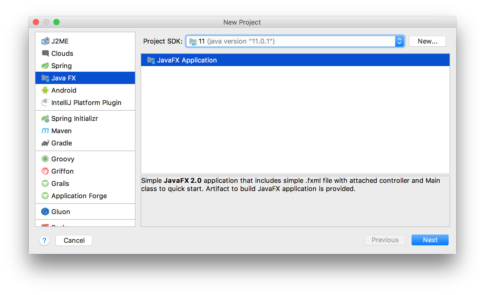 Provide a name to the project, like HelloFX, and a location. When the project opens, the JavaFX classes are not recognized. 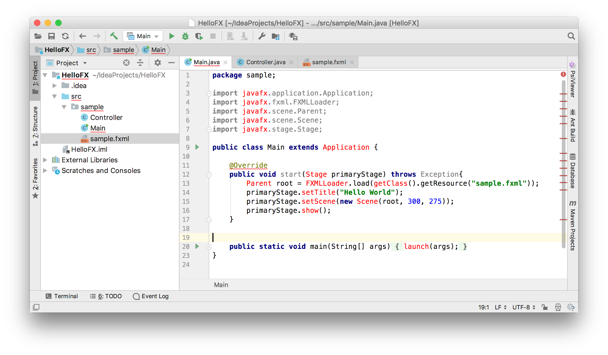
Go to File -> Project Structure -> Project, and set the project SDK to 11. You can also set the language level to 11 or greater. 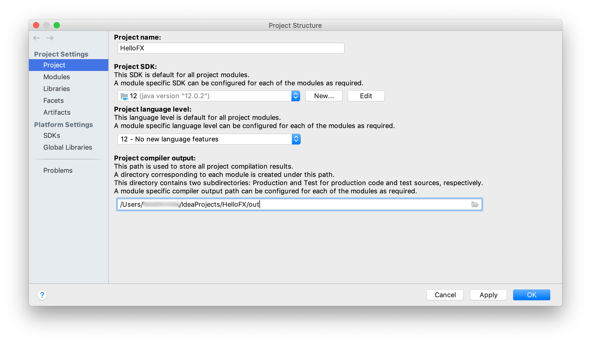
Go to File -> Project Structure -> Libraries and add the JavaFX 11 SDK as a library to the project. Point to the lib folder of the JavaFX SDK. 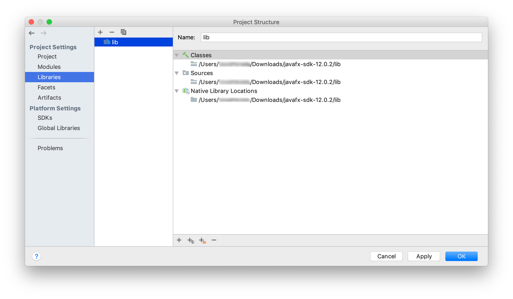 Once the library is applied, the JavaFX classes will be recognized by the IDE. 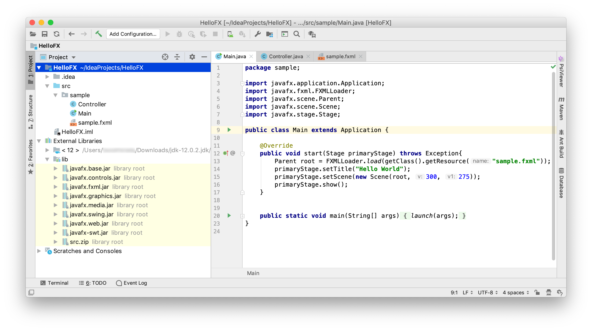
Caused by: java.lang.RuntimeException: Exception in Application start method
at javafx.graphics/com.sun.javafx.application.LauncherImpl.launchApplication1(LauncherImpl.java:900)
...
Caused by: java.lang.IllegalAccessError: class com.sun.javafx.fxml.FXMLLoaderHelper (in unnamed module @0xXXXXX) cannot access class com.sun.javafx.util.Utils (in module javafx.graphics) because module javafx.graphics does not export com.sun.javafx.util to unnamed module @0xXXXXX
...
To solve the issue, click on Run -> Edit Configurations... and add these VM options:
--module-path /path/to/javafx-sdk-11/lib --add-modules javafx.controls,javafx.fxml
--module-path "\path\to\javafx-sdk-11\lib" --add-modules javafx.controls,javafx.fxml
Note that the default project created by IntelliJ uses FXML, so javafx.fxml is required along with javafx.controls. If your project uses other modules, you will need to add them as well. 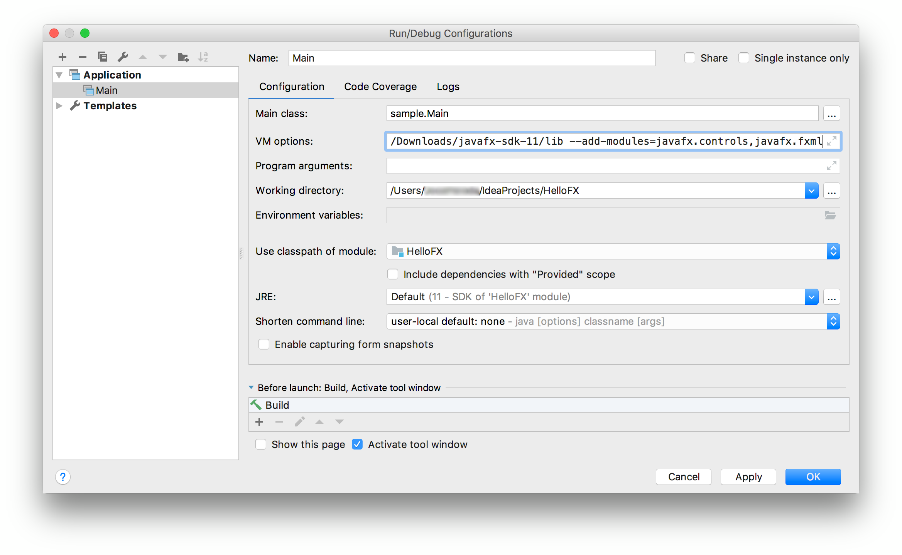 Click apply and close the dialog.
Alternatively, you can define a global variable that can be used in future projects. Go to Preferences (File -> Settings) -> Appearance & Behavior -> Path Variables, and define the name of the variable as PATH_TO_FX, and browse to the lib folder of the JavaFX SDK to set its value, and click apply. 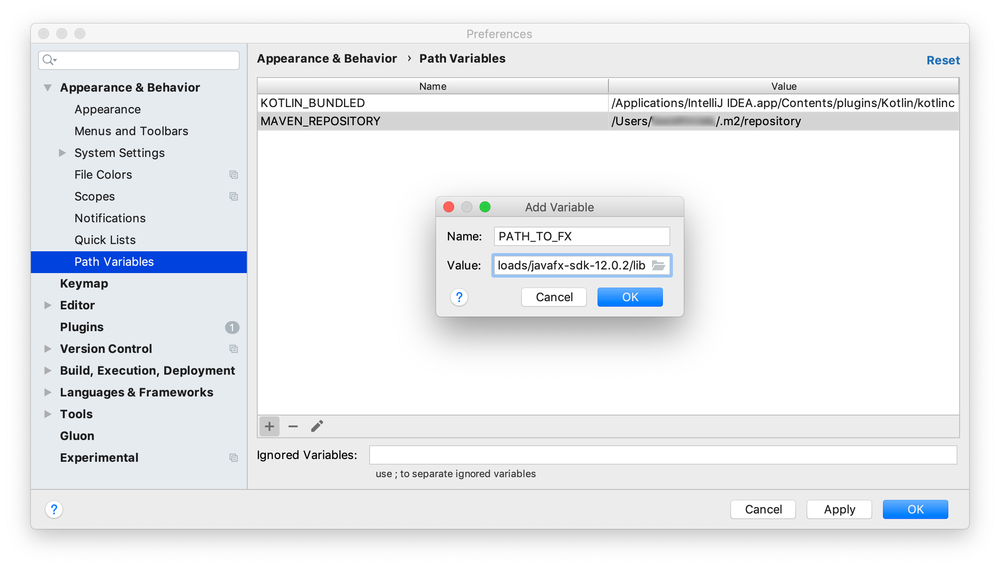
Then you can refer to this global variable when setting the VM options as:
--module-path ${PATH_TO_FX} --add-modules javafx.controls,javafx.fxml
Click Run -> Run... to run the project, now it should work fine.
Follow these steps to create a JavaFX non-modular project and use the Maven tools to build it and run it. Alternatively, you can download a similar project from here.
Select File -> New -> Project -> Maven and enable Create from archetype. If the JavaFX archetype is not installed yet, select Add archetype... and set the groupId (org.openjfx), the artifactId (javafx-maven-archetypes), and the version (0.0.1), and press OK. 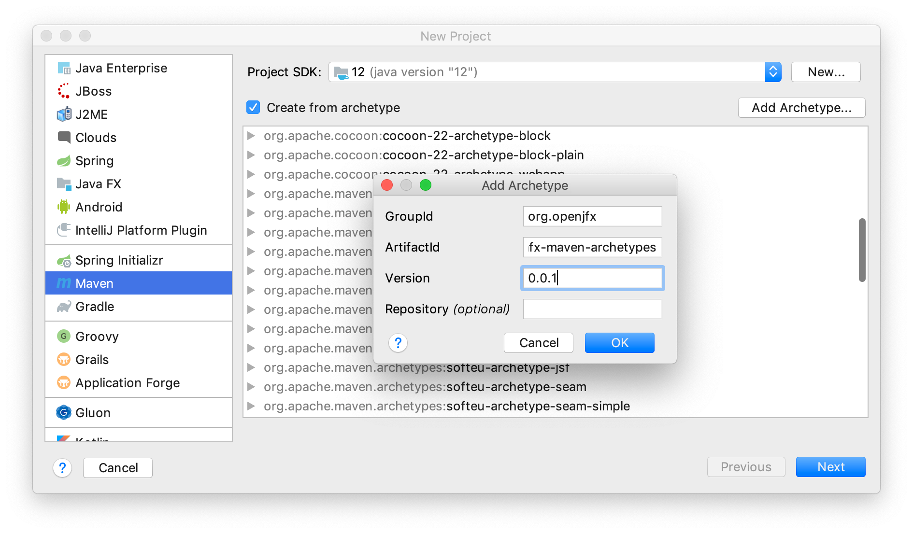
Once installed, select the artifact. 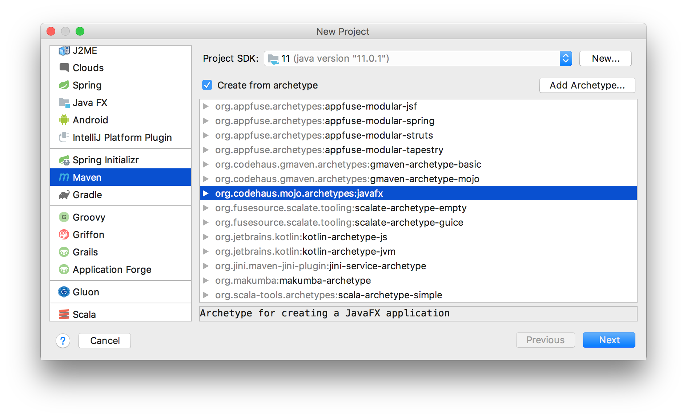 Provide the name to the project, like HelloFX and a location for the project. Optionally, provide the groupId, like org.openjfx, the artifactId, like hellofx.
Select the archetype artifactId, between javafx-archetype-fxml or javafx-archetype-simple, based on the use of FXML or not in your project. You can create a property for the javafx-version as well, and set it to 11. 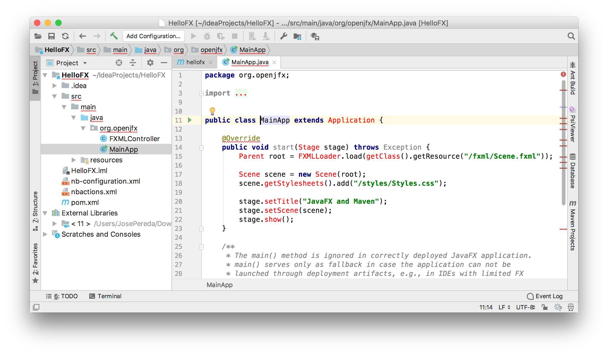
Press finish and the project will be created.
You can find the generated pom file here.
Verify it includes the javafx.controls and javafx.fxml dependencies, and includes the javafx-maven-plugin. 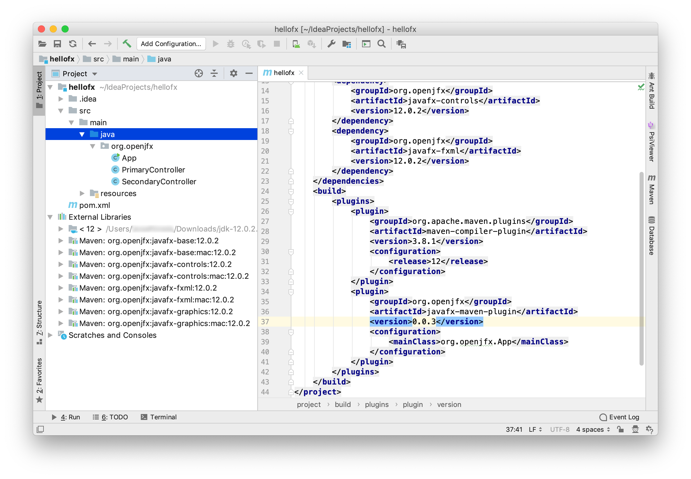 For a non-modular project, you can remove the module-info.java file.
Import the Maven changes. The JavaFX classes will be recognized. Notice also that Maven manages the required dependencies: it will add javafx.base and javafx.graphics that are required by javafx.controls and javafx.fxml, but most important, it will add the required classifier based on your platform, downloading the specific platform jars. 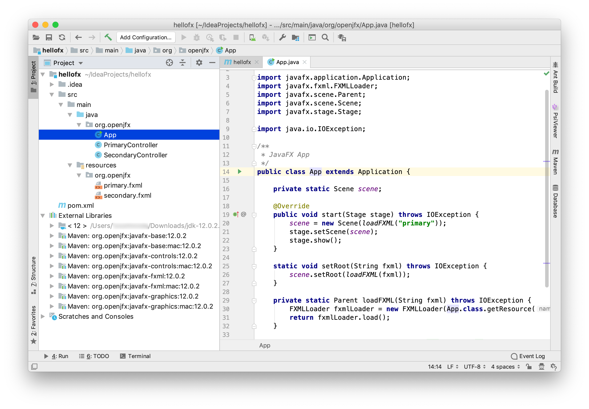 As for any other maven dependencies, these jars can be found in the local .m2 repository.
Open the Maven Projects window (View -> Tool Windows -> Maven) and click on HelloFX -> Plugins -> compiler -> compiler:compile to compile the project, and click on HelloFX -> Plugins -> javafx -> javafx:run to execute the project. 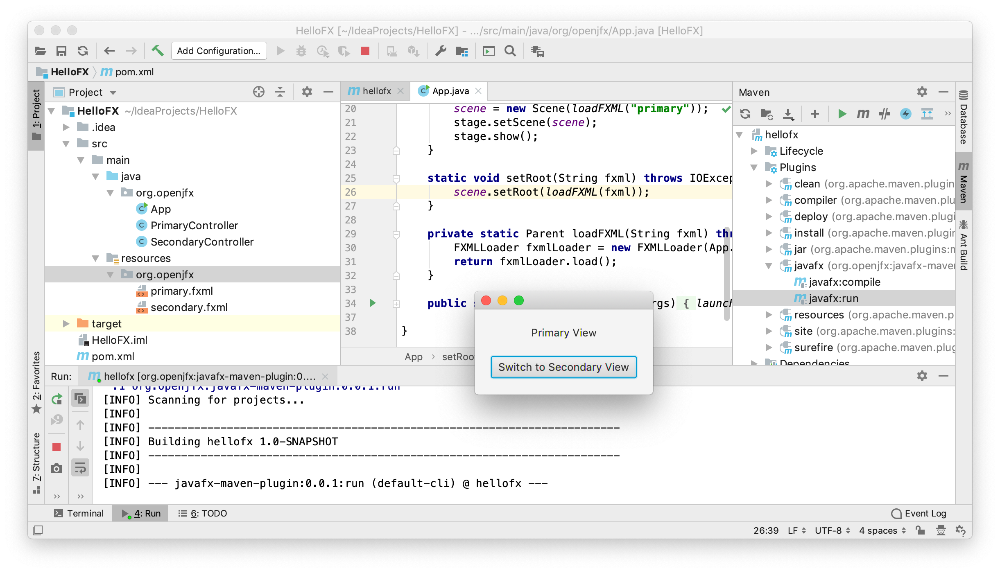
or set the correct java command to the javafx-maven-plugin:
<configuration><executable>/path/to/jdk-11/bin/java</executable></configuration>.
The project can be also run from a terminal. Make sure JAVA_HOME is set to 11 or greater, and run mvn clean javafx:run.
Follow these steps to create a JavaFX non-modular project and use the Gradle tools to build it and run it. Alternatively, you can download a similar project from here.
Create a Gradle project with Java.
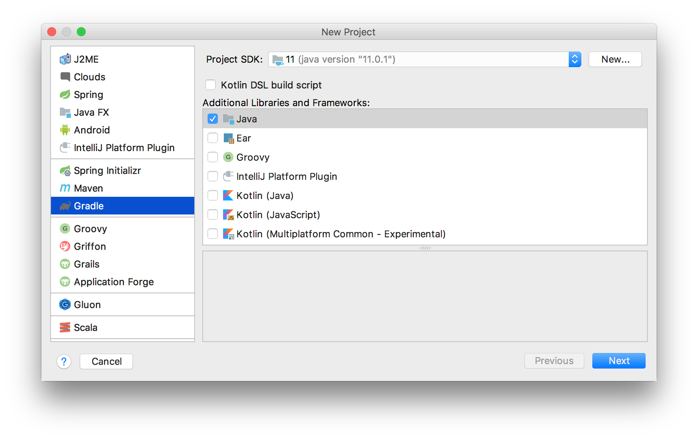
Provide a name to the project, like HelloFX and a location for the project.
Optionally provide the groupId, like org.openjfx, the artifactId, like hellofx.
When the project opens, add a package org.openjfx and an empty MainApp class.

Edit the build.gradle file and replace it with this build file, setting the mainClassName accordingly to org.openjfx.MainApp.
Similar to Maven, we can declare the required JavaFX modules in the build.gradle file. However, for Gradle we need to apply the JavaFX gradle plugin:
javafx {
version = "12"
modules = [ 'javafx.controls', 'javafx.fxml' ]
}
Synchronize the project and you will get the JavaFX dependencies. 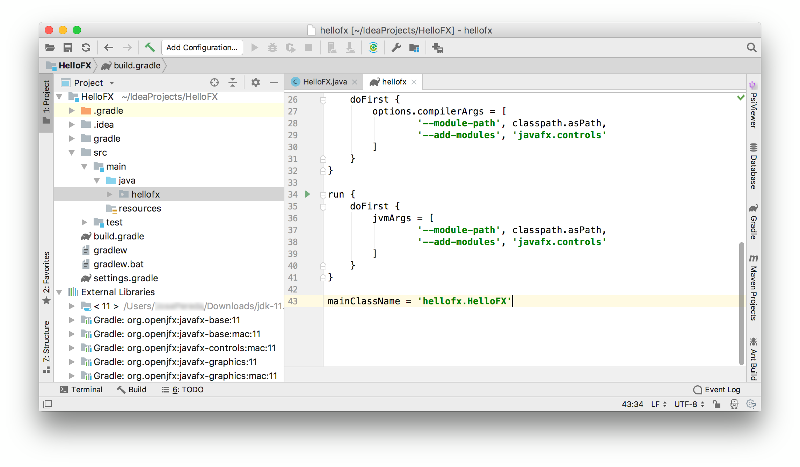 As for any other Gradle dependencies, these jars can be found in the local .gradle repository.
Based on this MainApp class, add its content to the project main class. Then add the controller and the FXML and and the css files. Note that the JavaFX classes are recognized by the IDE. 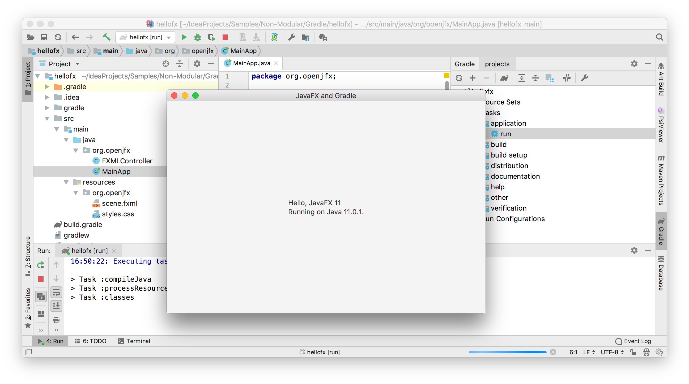
You can open the Gradle window and click on hellofx -> Tasks -> build -> build to build the project, and on hellofx -> Tasks -> application -> run to execute the project. 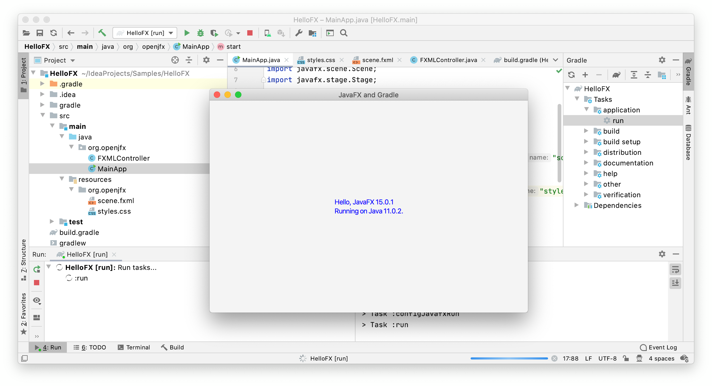
You can also open a terminal and run:
./gradlew run
gradlew run
Download the appropriate JavaFX jmods for your operating system and unzip it to a desired location, for instance /Users/your-user/Downloads/javafx-jmods-11.
Follow these steps to create a JavaFX modular project and use the IDE tools to build it and run it. Alternatively, you can download a similar project from here.
Provide a name to the project, like HelloFX, and a location. When the project opens, rename the sample package to org.openjfx.
Go to File -> Project Structure -> Project, and set the project SDK to 11. You can also set the language level to 11 or greater and change the default compiler output directory out to mods. 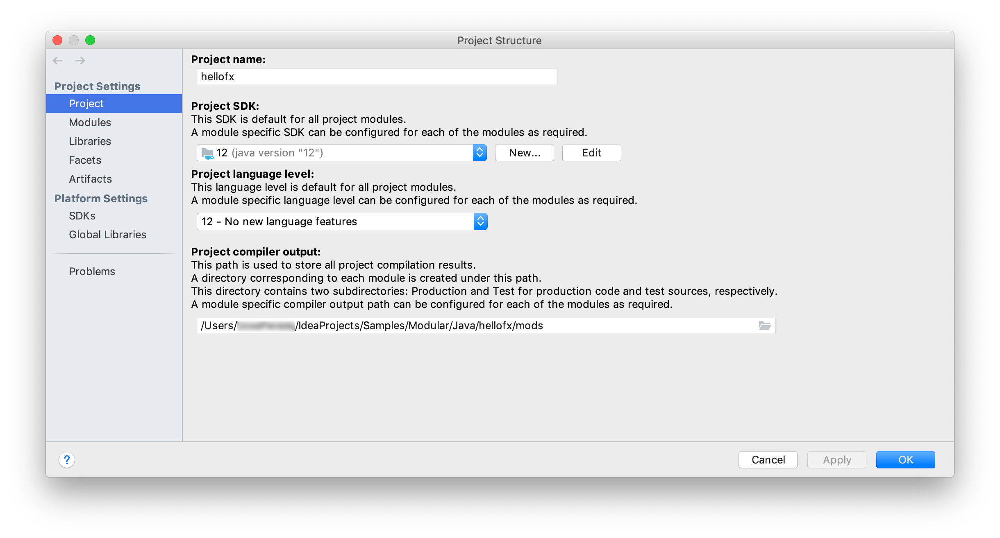
Go to File -> Project Structure -> Libraries and add the JavaFX 11 SDK as a library to the project. Point to the lib folder of the JavaFX SDK.
Add the module-info class, including the required modules javafx.controls and javafx.fxml. Since FXML uses reflection to access the controller in the module, this has to be opened to javafx.fxml. Finally, export the package org.openjfx. 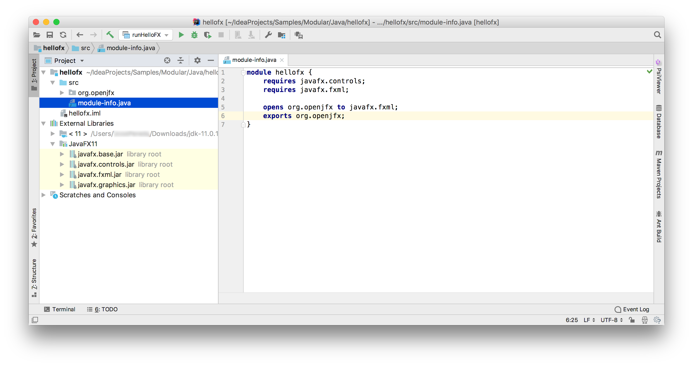
Either keep the default sample source code that has an empty controller, or replaced it based on this MainApp class, add its content to the project main class. Then add the controller and the FXML and and the css files. 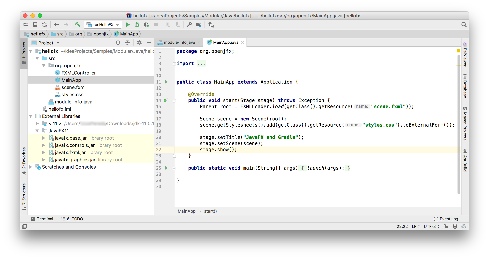
Click on Run -> Edit Configurations... and add these VM options:
--module-path ${PATH_TO_FX}:mods/production
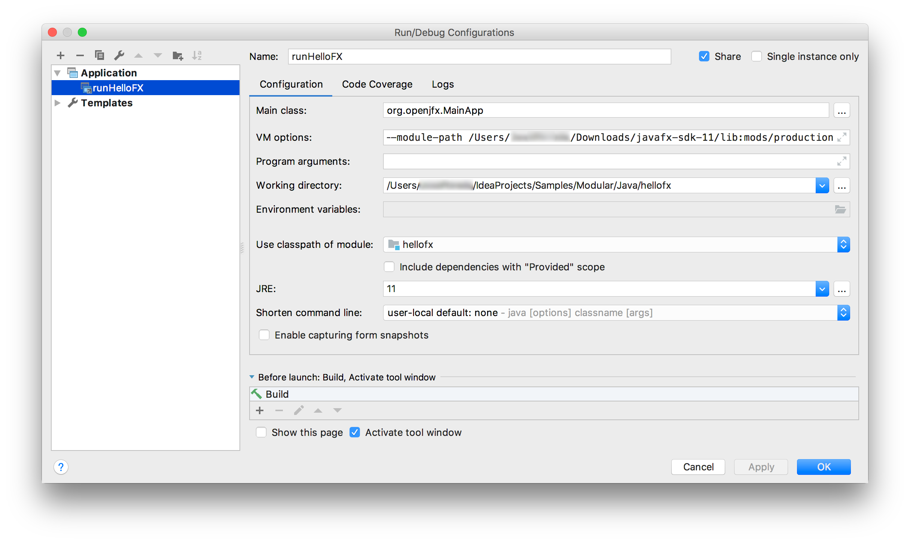 Click apply and close the dialog.
Click Run -> Run... to run the project.
To create a runtime image, run the following commands from a terminal:
export PATH_TO_FX_MODS=path/to/javafx-jmods-11
$JAVA_HOME/bin/jlink --module-path $PATH_TO_FX_MODS:mods/production --add-modules hellofx --output jre
jre/bin/java -m hellofx/org.openjfx.MainApp
set PATH_TO_FX_MODS="path\to\javafx-jmods-11"
jlink --module-path "%PATH_TO_FX_MODS%;mods\production" --add-modules hellofx --output jre
jre\bin\java -m hellofx/org.openjfx.MainApp
Follow these steps to create a JavaFX modular project and use the Maven tools to build it and run it. Alternatively, you can download a similar project from here.
Select File -> New -> Project -> Maven and enable Create from archetype. If the JavaFX archetype is not installed yet, select Add archetype... and set the groupId (org.openjfx), the artifactId (javafx-maven-archetypes), and the version (0.0.1), and press OK.
Once installed, select the artifact, press Next, and provide the name to the project, like HelloFX and a location for the project. Optionally, provide the groupId, like org.openjfx and the artifactId, like hellofx.
Select the archetype artifactId, between javafx-archetype-fxml or javafx-archetype-simple, based on the use of FXML or not in your project. You can create a property for the javafx-version as well, and set it to 11.
You can find the generated pom file here.
Verify it includes the javafx.controls and javafx.fxml dependencies, and includes the javafx-maven-plugin.
Open the module-info class, that includes the required modules javafx.controls and javafx.fxml. Since FXML uses reflection to access the controller in the module, it has been opened to javafx.fxml. 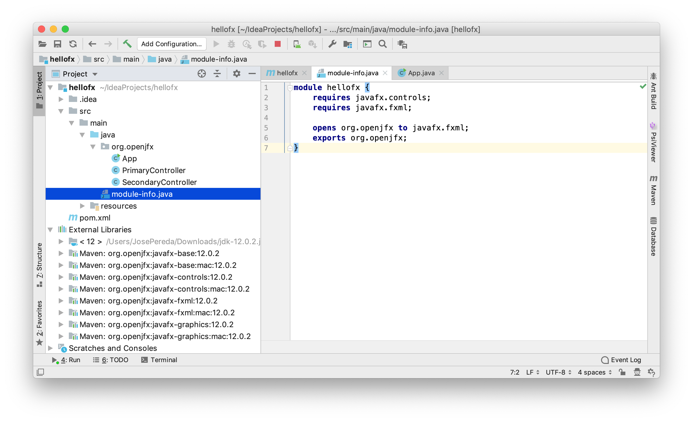
You can open the Maven Projects window and click on HelloFX -> Plugins -> compiler -> compiler:compile to compile the project, and click on HelloFX -> Plugins -> javafx -> javafx:run to execute the project.
The project can be also run from a terminal. Make sure JAVA_HOME is set to 11, and run mvn clean javafx:run.
To create a custom runtime, using the JavaFX Maven plugin, you can click on HelloFX -> Plugins -> javafx -> javafx:jlink, or from a terminal with JAVA_HOME set to 11 you can run:
mvn clean javafx:jlink
Note the plugin allows the usual options as the jlink command, as well as creating a launcher or a zip with the custom image.
And after the image is built, you can run it from command line:
target/hellofx/bin/launcher
target\hellofx\bin\launcher
Follow these steps to create a JavaFX modular project and use the Gradle tools to build it and run it. Alternatively, you can download a similar project from here.
Create a Gradle project with Java. Provide a name to the project, like HelloFX and a location for the project. Optionally provide the groupId, like org.openjfx, the artifactId, like hellofx. When the project opens, add a package org.openjfx and an empty MainApp class.
Edit the build.gradle file and replace it with this build file, setting the mainClassName accordingly to org.openjfx.MainApp.
Note the use of the org.openjfx.javafxplugin plugin, that removes the necessity of adding the JavaFX dependencies and setting the module-path for the compile and run task for them. 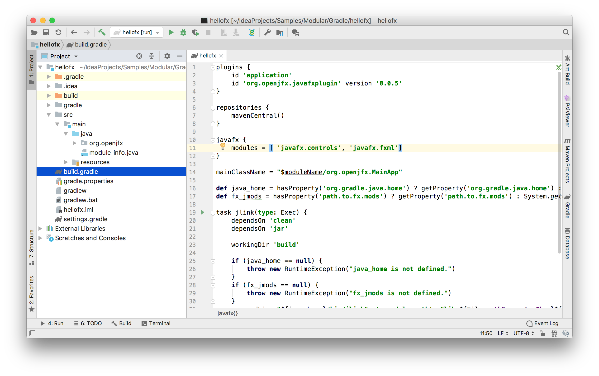
Add the module-info class, including the required modules javafx.controls and javafx.fxml. Since FXML uses reflection to access the controller in the module, this has to be opened to javafx.fxml. Finally, export the package org.openjfx.
Based on this MainApp class, add its content to the project main class. Then add the controller and the FXML and and the css files. 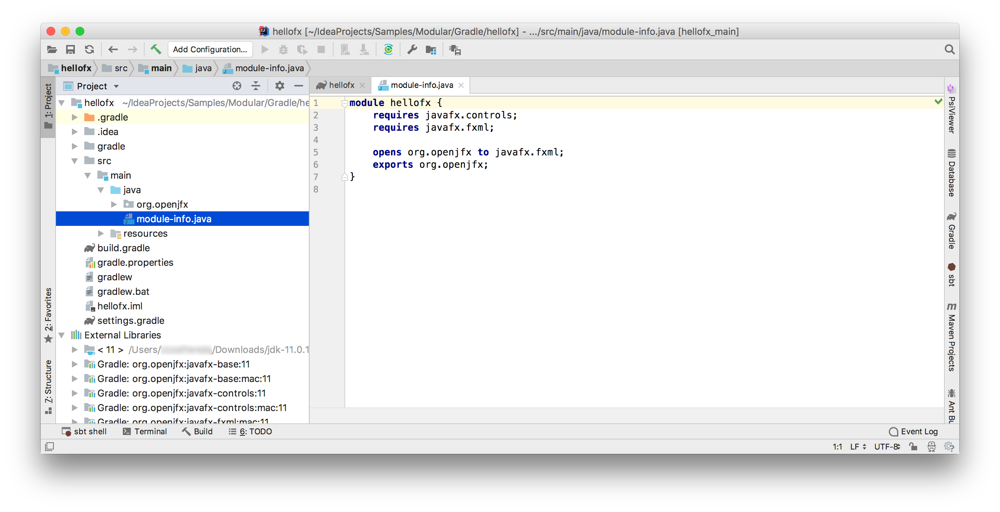
You can open the Gradle window and click on hellofx->Tasks->build->build to build the project, and on hellofx->Tasks->application->run to execute the project. You can also open a terminal and run:
./gradlew run
gradlew run
To create a custom runtime, you can use the org.beryx.jlink plugin. It can be easily combined with the JavaFX Gradle plugin:
plugins {
id 'application'
id 'org.openjfx.javafxplugin' version '0.0.7'
id 'org.beryx.jlink' version '2.9.4'
}
javafx {
version = "12"
modules = [ 'javafx.controls', 'javafx.fxml' ]
}
jlink {
launcher {
name = 'hellofx'
}
}
to generate the custom image. Run hellofx -> Tasks -> build -> jlink task to create the image.
To run the image, type on a terminal:
build/image/bin/hellofx
build\image\bin\hellofx